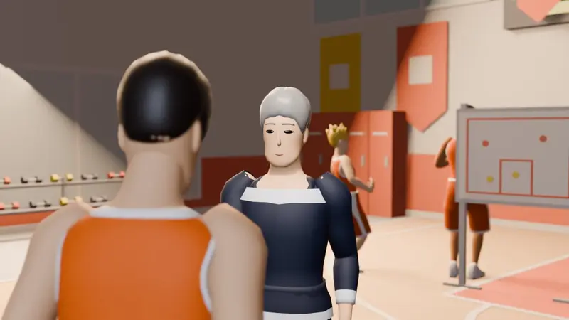
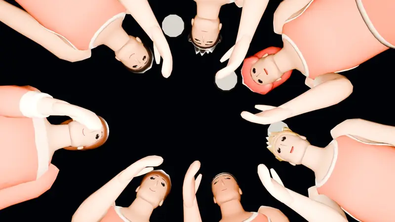
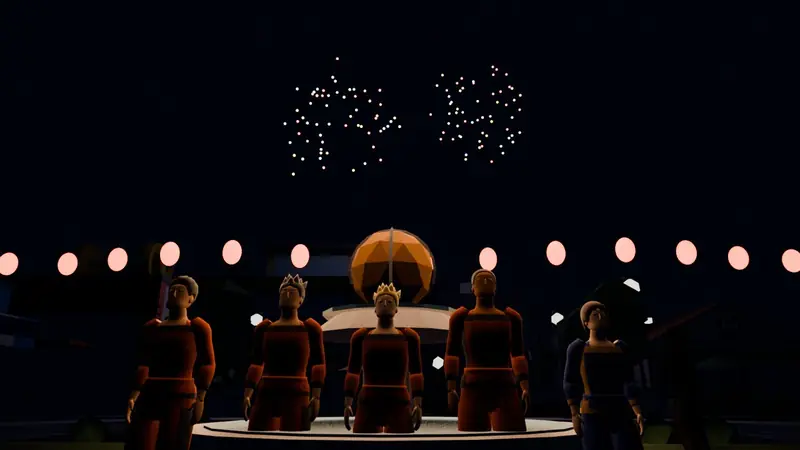
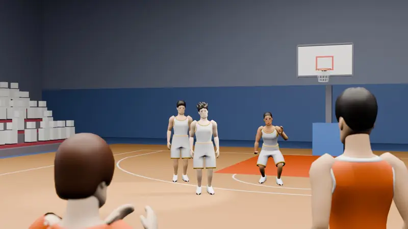
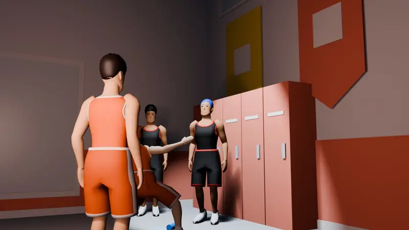
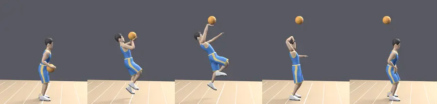
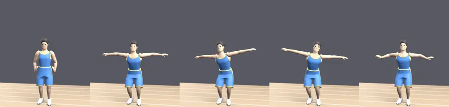

08
STORY & RIVALS
胸が熱くなる、
約200場面の物語。
陽ヶ丘高校バスケ部。廃部の危機から始まる3年間を、場面絵つきのドラマで。選択肢しだいで、仲間との関係や物語の行方が変わります。読み飛ばしたい日はスキップもできます。



陽ヶ丘の仲間たち
神谷 蓮相棒のシューター
固定のパートナー。チームのシューター。
日向 颯太スピード型
スピードが武器の仲間。
黒田 誠無口なセンター
多くを語らない、インサイドの柱。
三浦 大地先輩
バスケ部の先輩。
白石 結衣マネージャー
スコアブックをつける、チームの支え。
鬼塚 監督監督
陽ヶ丘バスケ部の監督。
鷹野 迅ムカつく天才
一匹狼の天才。いつか最高の味方に……？
立ちはだかるライバル
氷室 蓮帝王学院のエース・冷たい天才
同じ学年・同じポジションの宿敵。夏と冬の決勝で待っている。
獅堂 豪黒嶺高校のエース
相手を見下す切り込み役。何度もぶつかる宿敵。
真田 玲央プロのライバルスター
口が悪いプロのスター。プロ編で出会う。
プロ編では、ベテランの大門、代理人の九条、記者の早瀬なども登場します。


人物だけの、シュートフォームと決めポーズ
物語の人物には、その人だけの動きがあります。氷室は沈まずに胸から放つ最速のリリース、真田は投石機のように頭の後ろから振り出すシュート。決めたあとのポーズも一人ひとり違います（自分の選手には付けられない、人物専用の動きです）。

